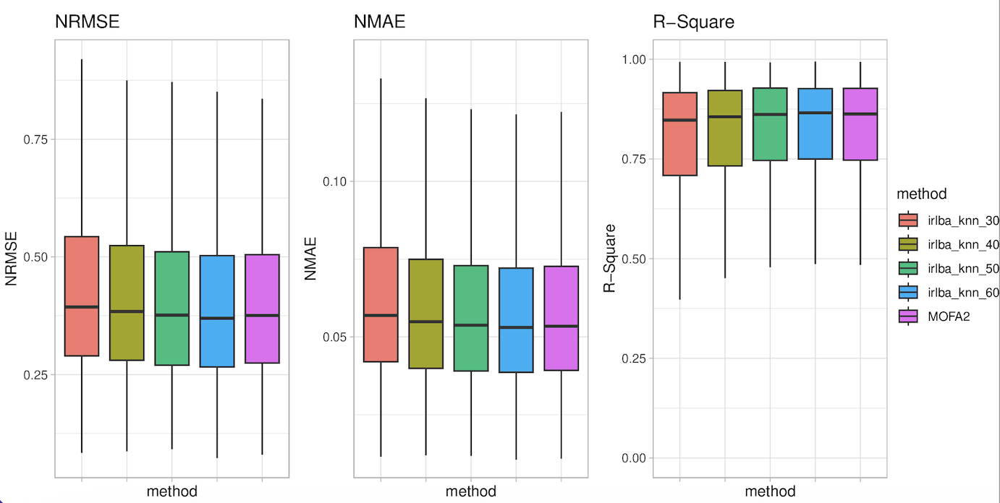

Last updated: 2025-04-13
Checks: 6 1
Knit directory:
omics-imputation-paper/analysis/
This reproducible R Markdown analysis was created with workflowr (version 1.7.1). The Checks tab describes the reproducibility checks that were applied when the results were created. The Past versions tab lists the development history.
The R Markdown file has unstaged changes. To know which version of
the R Markdown file created these results, you’ll want to first commit
it to the Git repo. If you’re still working on the analysis, you can
ignore this warning. When you’re finished, you can run
wflow_publish to commit the R Markdown file and build the
HTML.
Great job! The global environment was empty. Objects defined in the global environment can affect the analysis in your R Markdown file in unknown ways. For reproduciblity it’s best to always run the code in an empty environment.
The command set.seed(1) was run prior to running the
code in the R Markdown file. Setting a seed ensures that any results
that rely on randomness, e.g. subsampling or permutations, are
reproducible.
Great job! Recording the operating system, R version, and package versions is critical for reproducibility.
Nice! There were no cached chunks for this analysis, so you can be confident that you successfully produced the results during this run.
Great job! Using relative paths to the files within your workflowr project makes it easier to run your code on other machines.
Great! You are using Git for version control. Tracking code development and connecting the code version to the results is critical for reproducibility.
The results in this page were generated with repository version ec0cffe. See the Past versions tab to see a history of the changes made to the R Markdown and HTML files.
Note that you need to be careful to ensure that all relevant files for
the analysis have been committed to Git prior to generating the results
(you can use wflow_publish or
wflow_git_commit). workflowr only checks the R Markdown
file, but you know if there are other scripts or data files that it
depends on. Below is the status of the Git repository when the results
were generated:
Ignored files:
Ignored: .Rproj.user/
Unstaged changes:
Modified: analysis/supp_parameter_comparison.Rmd
Note that any generated files, e.g. HTML, png, CSS, etc., are not included in this status report because it is ok for generated content to have uncommitted changes.
These are the previous versions of the repository in which changes were
made to the R Markdown
(analysis/supp_parameter_comparison.Rmd) and HTML
(docs/supp_parameter_comparison.html) files. If you’ve
configured a remote Git repository (see ?wflow_git_remote),
click on the hyperlinks in the table below to view the files as they
were in that past version.
| File | Version | Author | Date | Message |
|---|---|---|---|---|
| Rmd | ec0cffe | “John | 2025-04-13 | update |
This page evaluates different parameters for EBMF and softImpute imputation methods on omics data. The analysis compares performance across different priors and numbers of factors(for EBMF) and different rank/lambda combinations (for softImpute).
library(tidyverse)
library(data.table)
library(flashier) # For EBMF imputation
library(softImpute) # For softImpute method
library(irlba) # For fast SVD computation
library(ggplot2) # For visualization
library(gridExtra) # For arranging multiple plots
source('code/random_missing_generation.R')
source('code/calculate_metrics.R')# Load phenotype data with missing values
phenotype <- read_delim('knight_QCed.bed.gz')
# Filter to keep only rows with ≤50% missing values
pheno.na <- phenotype[rowMeans(is.na(phenotype[, 5:ncol(phenotype)])) <= 0.5, ]
mat_na <- pheno.na[, -c(1:4)]
# Assign additional missing to orginal matrix
missing <- 0.5
mat_na <- add_missing_values(mat_na, missing = missing)
rownames(mat_na) <- pheno.na$ID
# Create matrices for complete data and data with NAs
Xna <- as.matrix(mat_na)
Xcomp <- as.matrix(pheno.na[, -c(1:4)])
# Set row names for both matrices
rownames(Xna) <- pheno.na$ID
rownames(Xcomp) <- pheno.na$ID
# Identify locations where we have true values to evaluate imputation
NAloc1 = is.na(Xcomp)
NAloc2 = is.na(Xna)
NAtoUse = NAloc1 == FALSE & NAloc2 == TRUE
# Create reference table with true values for evaluation
tobeimputed <- data.table(
ID = rownames(Xcomp)[which(NAtoUse, arr.ind=TRUE)[,'row']],
sample_id = colnames(Xcomp)[which(NAtoUse, arr.ind=TRUE)[,'col']],
true = Xcomp[NAtoUse]
)EBMF is a empirical bayes matrix factorization analysis method that can be used for imputation. We’ll test its performance with different numbers of factors (30, 40, 50, 60).
# First create mean-imputed matrix as starting point
pheno_mean <- as.matrix(pheno_NAs)
for (t.row in 1:nrow(pheno_NAs)) {
pheno_mean[t.row, is.na(pheno_mean[t.row,])] <- rowMeans(pheno_mean, na.rm = TRUE)[t.row]
}
# Function to run EBMF with specified number of factors
run_flash <- function(n_factors, input_matrix) {
pca_res <- irlba::irlba(input_matrix, nv = n_factors)
pca_res <- list(d = pca_res$d, u = pca_res$u, v = pca_res$v)
fl_pca <- flash_init(as.matrix(pheno_NAs), S = NULL, var_type = 1) |>
flash_factors_init(pca_res, ebnm_fn = ebnm_point_laplace) |>
flash_backfit(maxiter = 300)
# Impute missing values
Yfill <- ifelse(is.na(as.matrix(pheno_NAs)), fitted(fl_pca), as.matrix(pheno_NAs))
# Create result data.table
data.table(
ID = rownames(NAtoUse)[which(NAtoUse, arr.ind=TRUE)[,'row']],
sample_id = colnames(NAtoUse)[which(NAtoUse, arr.ind=TRUE)[,'col']],
imputation = Yfill[rownames(NAtoUse), colnames(NAtoUse)][NAtoUse],
method = as.character(n_factors)
)
}
# Run EBMF with different numbers of factors
flash_results <- lapply(c(30, 40, 50, 60), run_flash, input_matrix = pheno_mean)
names(flash_results) <- paste0("flash.knn.irlba.", c(30, 40, 50, 60))
# Combine results
imput_flash <- rbindlist(flash_results, fill = TRUE)
imput_flash <- merge(imput_flash, tobeimputed)We then visualize our results on this comparison.
# calculate metrics
res_flash_factors <- calculate_metrics(imput_flash)
# Get plot ranges
boxnrmse <- res_flash_factors[, boxplot.stats(NRMSE)$stats, by = 'method']
boxnmae <- res_flash_factors[, boxplot.stats(nmae_feature)$stats, by = 'method']
# Create plots
p1 <- ggplot(res_flash_factors) +
geom_boxplot(aes(x = method, y = NRMSE, fill = method), outlier.shape = NA) +
coord_cartesian(ylim = range(boxnrmse$V1)) +
theme_light() +
theme(legend.position = "none", axis.text.x = element_blank()) +
scale_x_discrete(guide = guide_axis(angle = 60)) +
ggtitle('EBMF: NRMSE by Number of Factors')
p2 <- ggplot(res_flash_factors1) +
geom_boxplot(aes(x = method, y = NMAE, fill = method), outlier.shape = NA) +
coord_cartesian(ylim = range(boxnmae$V1)) +
theme_light() +
theme(legend.position = "none", axis.text.x = element_blank()) +
scale_x_discrete(guide = guide_axis(angle = 60)) +
ggtitle('EBMF: NMAE by Number of Factors')
p3 <- ggplot(res_flash_factors1) +
geom_boxplot(aes(x = method, y = r2_cpg, fill = method), outlier.shape = NA) +
coord_cartesian(ylim = c(0, 1)) +
theme_light() +
theme(axis.text.x = element_blank()) +
scale_x_discrete(guide = guide_axis(angle = 60)) +
ggtitle('EBMF: R-square by Number of Factors') +
labs(y = 'R-Square')
# Arrange plots
grid.arrange(p1, p2, p3, ncol = 3)
EBMF allows different prior distributions for the factors. We compare three options:
Point Laplace prior (ebnm_point_laplace)
Point Normal prior (ebnm_point_normal)
Normal Scale Mixture prior (ebnm_normal_scale_mixture)
# Function to run EBMF with different priors
run_flash_prior <- function(prior_fn, prior_name) {
pca_res <- irlba::irlba(pheno_mean, nv = 60)
pca_res <- list(d = pca_res$d, u = pca_res$u, v = pca_res$v)
fl_pca <- flash_init(as.matrix(pheno_NAs), S = NULL, var_type = 1) |>
flash_factors_init(pca_res, ebnm_fn = prior_fn) |>
flash_backfit(maxiter = 200)
Yfill <- ifelse(is.na(as.matrix(pheno_NAs)), fitted(fl_pca), as.matrix(pheno_NAs))
data.table(
ID = rownames(NAtoUse)[which(NAtoUse, arr.ind=TRUE)[,'row']],
sample_id = colnames(NAtoUse)[which(NAtoUse, arr.ind=TRUE)[,'col']],
imputation = Yfill[rownames(NAtoUse), colnames(NAtoUse)][NAtoUse],
method = prior_name
)
}
# Run with different priors
flash_prior_results <- list(
run_flash_prior(ebnm_point_normal, "point_normal"),
run_flash_prior(ebnm_point_laplace, "point_laplace"),
run_flash_prior(ebnm_normal_scale_mixture, "normal_mixture")
)
# Combine results
imput_flash_priors <- rbindlist(flash_prior_results, fill = TRUE)
imput_flash_priors <- merge(imput_flash_priors, tobeimputed)Again, we visualize our results on this comparison.
# Calculate metrics
res_flash_priors <- calculate_metrics(imput_flash_priors)
# Get plot ranges
boxnrmse <- res_flash_priors[, boxplot.stats(NRMSE)$stats, by = 'method']
boxnmae <- res_flash_priors[, boxplot.stats(nmae_feature)$stats, by = 'method']
# Create plots
p1 <- ggplot(res_flash_priors) +
geom_boxplot(aes(x = method, y = NRMSE, fill = method), outlier.shape = NA) +
coord_cartesian(ylim = range(boxnrmse$V1)) +
theme_light() +
theme(legend.position = "none", axis.text.x = element_blank()) +
scale_x_discrete(guide = guide_axis(angle = 60)) +
ggtitle('EBMF: NRMSE by Prior Distribution')
p2 <- ggplot(res_flash_prior) +
geom_boxplot(aes(x = method, y = NMAE, fill = method), outlier.shape = NA) +
coord_cartesian(ylim = range(boxnmae$V1)) +
theme_light() +
theme(legend.position = "none", axis.text.x = element_blank()) +
scale_x_discrete(guide = guide_axis(angle = 60)) +
ggtitle('EBMF: NMAE by Prior Distribution')
p3 <- ggplot(res_flash_priors) +
geom_boxplot(aes(x = method, y = r2_cpg, fill = method), outlier.shape = NA) +
coord_cartesian(ylim = c(0, 1)) +
theme_light() +
theme(axis.text.x = element_blank()) +
scale_x_discrete(guide = guide_axis(angle = 60)) +
ggtitle('EBMF: R² by Prior Distribution') +
labs(y = 'R-Square')
# Arrange plots
grid.arrange(p1, p2, p3, ncol = 3)softImpute is a matrix completion method using nuclear norm regularization. We test different combinations of rank (number of components) and lambda (regularization parameter).
# Define parameter combinations to test
rank_lst <- c(5, 10, 25, 50)
lambda_lst <- c(5, 15, 30, 50)
# Run softImpute with all parameter combinations
imp <- list()
i <- 1
for (r in rank_lst) {
for (l in lambda_lst) {
X_mis_C <- as(as.matrix(pheno_NAs), "Incomplete")
fit1 <- softImpute(X_mis_C, rank = r, lambda = l, type = "svd")
Yfill5 <- complete(as.matrix(pheno_NAs), fit1)
imp[[i]] <- data.table(
ID = rownames(NAtoUse)[which(NAtoUse, arr.ind=TRUE)[,'row']],
sample_id = colnames(NAtoUse)[which(NAtoUse, arr.ind=TRUE)[,'col']],
imputation = Yfill5[rownames(NAtoUse), colnames(NAtoUse)][NAtoUse],
rank = r,
lambda = l
)
i <- i + 1
}
}
# Combine results
imput_soft <- rbindlist(imp, fill = TRUE)
imput_soft[, rank := factor(rank, levels = rank_lst)]
imput_soft[, lambda := factor(lambda, levels = lambda_lst)]
imput_soft <- merge(imput_soft, tobeimputed)Finally, visualize the comparison result.
# calculate metrics
res_softimpute <- calculate_metrics(imput_soft, c("rank", "lambda"))
# Create faceted plots for softImpute results
p1 <- ggplot(res_softimpute) +
geom_boxplot(aes(x = lambda, y = NRMSE, fill = lambda)) +
facet_grid(rank ~ ., scales = "free_y", space = "free") +
theme_light() +
theme(axis.text.x = element_blank()) +
ggtitle("softImpute: NRMSE by Rank and Lambda")
p2 <- ggplot(res_softimpute) +
geom_boxplot(aes(x = lambda, y = NMAE, fill = lambda)) +
facet_grid(rank ~ ., scales = "free_y", space = "free") +
theme_light() +
theme(legend.position = "none", axis.text.x = element_blank()) +
ggtitle("softImpute: NMAE by Rank and Lambda")
p3 <- ggplot(res_softimpute) +
geom_boxplot(aes(x = lambda, y = r2_cpg, fill = lambda)) +
facet_grid(rank ~ ., scales = "free_y", space = "free") +
theme_light() +
theme(legend.position = "none", axis.text.x = element_blank()) +
ggtitle("softImpute: R² by Rank and Lambda") +
labs(y = 'R-Square')
legend <- get_legend(p1)
p1 <- p1 + theme(legend.position = "none")
# Arrange plots
grid.arrange(p1, p2, p3, legend, ncol = 4, widths = c(2.3, 2.3, 2.3, 0.8))
sessionInfo()R version 4.4.3 (2025-02-28)
Platform: aarch64-apple-darwin20
Running under: macOS Sequoia 15.4
Matrix products: default
BLAS: /Library/Frameworks/R.framework/Versions/4.4-arm64/Resources/lib/libRblas.0.dylib
LAPACK: /Library/Frameworks/R.framework/Versions/4.4-arm64/Resources/lib/libRlapack.dylib; LAPACK version 3.12.0
locale:
[1] en_US.UTF-8/en_US.UTF-8/en_US.UTF-8/C/en_US.UTF-8/en_US.UTF-8
time zone: America/Chicago
tzcode source: internal
attached base packages:
[1] stats graphics grDevices utils datasets methods base
loaded via a namespace (and not attached):
[1] vctrs_0.6.5 cli_3.6.4 knitr_1.50 rlang_1.1.5
[5] xfun_0.51 stringi_1.8.7 promises_1.3.2 jsonlite_2.0.0
[9] workflowr_1.7.1 glue_1.8.0 rprojroot_2.0.4 git2r_0.36.2
[13] htmltools_0.5.8.1 httpuv_1.6.15 sass_0.4.9 rmarkdown_2.29
[17] evaluate_1.0.3 jquerylib_0.1.4 tibble_3.2.1 fastmap_1.2.0
[21] yaml_2.3.10 lifecycle_1.0.4 whisker_0.4.1 stringr_1.5.1
[25] compiler_4.4.3 fs_1.6.5 Rcpp_1.0.14 pkgconfig_2.0.3
[29] rstudioapi_0.17.1 later_1.4.1 digest_0.6.37 R6_2.6.1
[33] pillar_1.10.1 magrittr_2.0.3 bslib_0.9.0 tools_4.4.3
[37] cachem_1.1.0